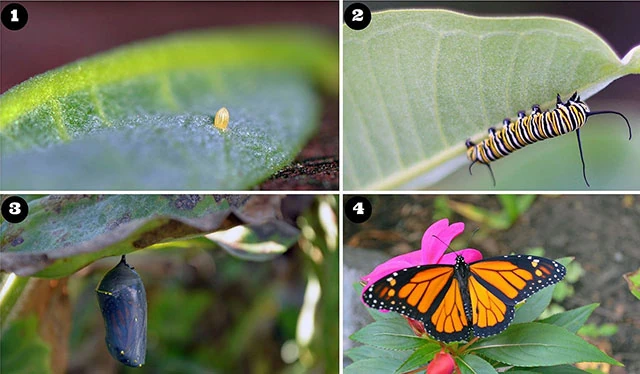
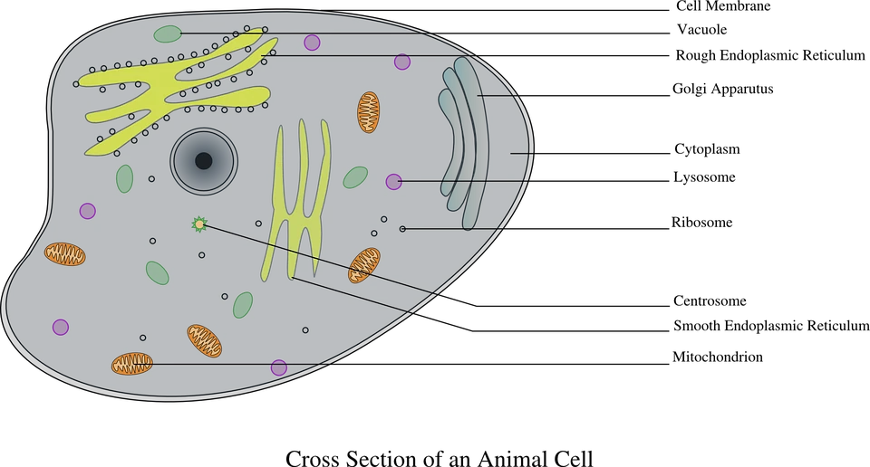
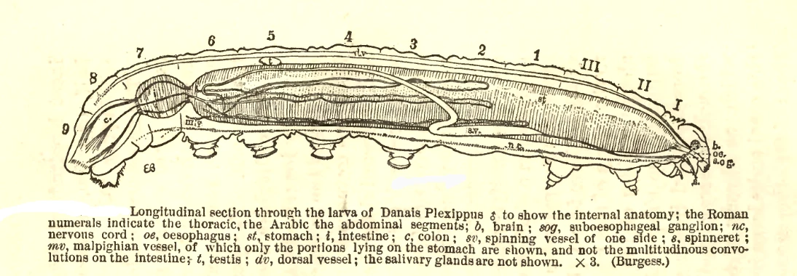
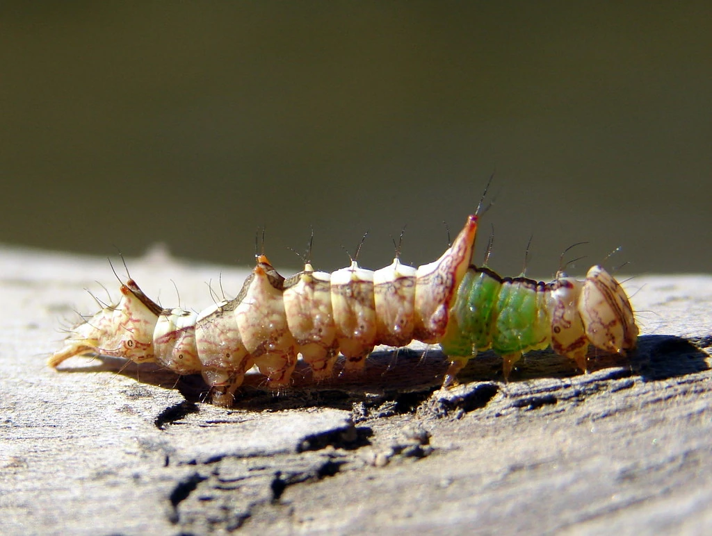
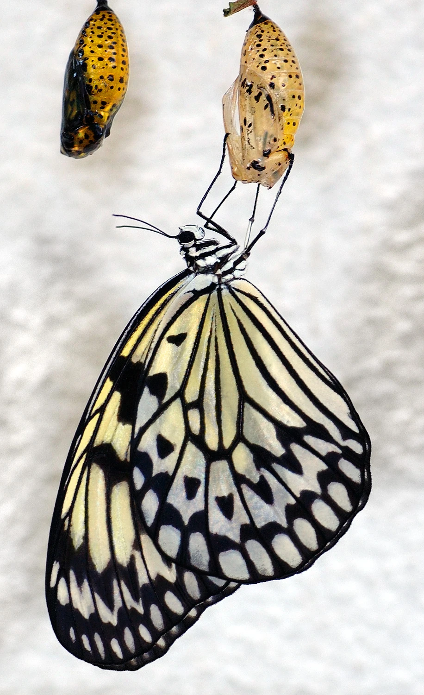

A mother butterfly has taste buds in her feet. She stamps on a leaf or a flower head or a plant stalk to know whether it is the sort of plant that her baby caterpillars will eat. If the location is good and the flavour in her feet is right, she will lay an egg.

A butterfly egg starts as a single cell, with a yolk full of protein. The cell begins to divide: 2 then 4 then 8 then 16 cells... The first few cells are identical to the first, undifferentiated stem cells. Then some of these continue to divide and to develop into the different organs that will become the caterpillar, and others remain exactly as they are: tiny imaginal discs of stem cells, strategically placed inside the caterpillar's body, waiting silently to become a parts of a different creature later.

A week or so later, the caterpillar emerges from the egg. An eating machine. It chews its way through the surface of the egg, then eats the rest of the egg, then starts to eat the leaf or the flower or the stalk that the egg was attached to. Many caterpillars can eat only one kind of plant, which explains why the mother butterfly has to be careful about her choice.
Video of a Monarch caterpillar emerging from its eggThe plants and the caterpillars evolve together: the plant wants to kill the caterpillars that eat it; the caterpillars want to keep themselves and the plant alive. When a plant creates poisons to kill the caterpillar, the caterpillar may evolve to store the poison so that it will kill its own predators, or it may evolve eating habits that allow the poison to bleed harmlessly away. The feeder shapes the future of its food.
The caterpillar goes through 4 stages. At the end of each stage, its skin splits open and a new version of the caterpillar emerges. At each stage, the internal organs of the caterpillar are developing and changing.

At the end of the fourth stage, the caterpillar crawls away from its food plant and finds a good place to become a chrysalis. It attaches itself to a stalk or a twig and creates a cocoon around itself to protect itself and hide itself. And now all the gastric juices that it has been using to digest its plant food start to digest most of its own body.
The imaginal discs use the material from the digested parts of the body to grow into the final organs of the butterfly: the heart, brain, eyes, legs, sexual organs, antennae and the proboscis which it uses to suck up food.

The butterfly eats different food from the caterpillar. The food plants eaten by the caterpillar and the food plants eaten by the butterfly evolve separately, following different paths. The evolution of the butterfly must follow a different path from that of its caterpillar.
The butterfly is two creatures born from a single egg.